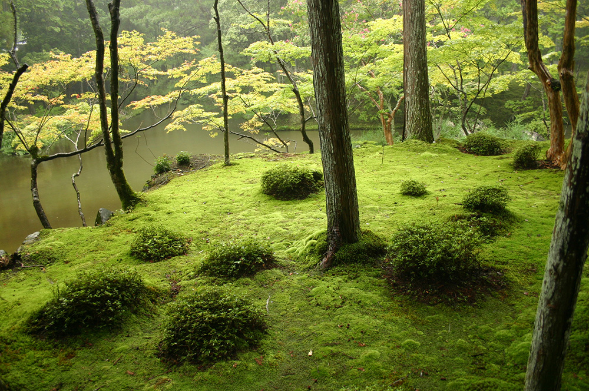
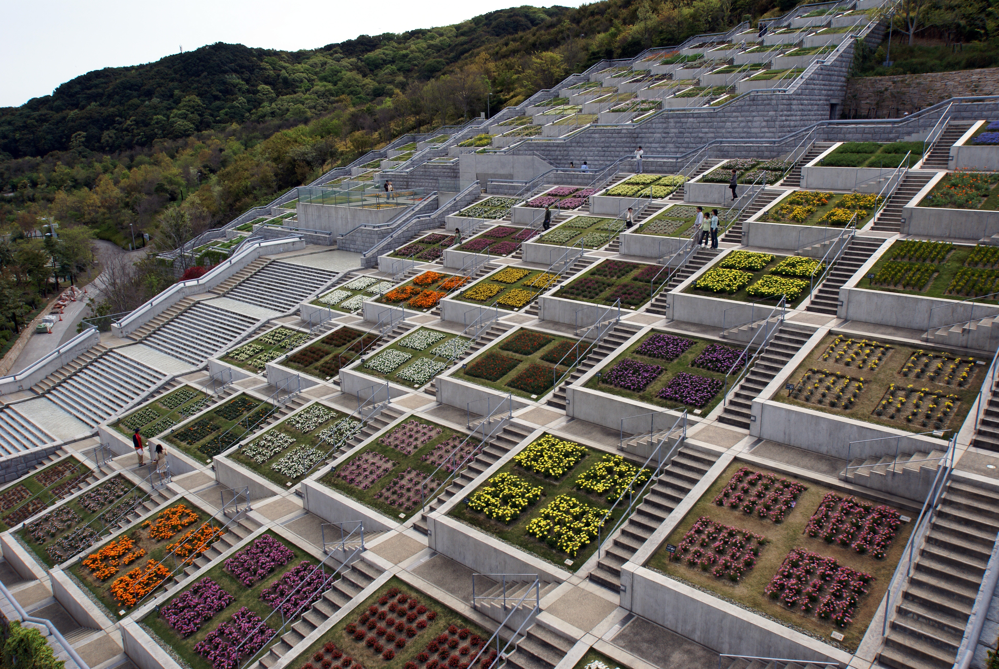

Japanese gardens (nihon teien) are traditional gardens that create miniature
idealized landscapes, often in a highly abstract and stylized way.[1] The gardens of the
Emperors and nobles were designed for recreation and aesthetic pleasure, while the gardens
of Buddhist temples were designed for contemplation and meditation.
Japanese garden styles include karesansui, Japanese rock gardens or zen gardens, which are
meditation gardens where white sand replaces water; roji, simple, rustic gardens with
teahouses where the Japanese tea ceremony is conducted; kaiyū-shiki-teien, promenade or
stroll gardens, where the visitor follows a path around the garden to see carefully
composed landscapes; and tsubo-niwa, small courtyard gardens.
Japanese gardens were developed under the influences of the Chinese gardens,[2]
but gradually Japanese garden designers began to develop their own aesthetics, based on
Japanese materials and Japanese culture. By the Edo period, the Japanese garden had its
own distinct appearance.[3] Since the end of the 19th century, Japanese gardens have also
been adapted to Western settings.

Saihō-ji (Kyoto), also known as the "Moss Garden", begun in 1339Murin-an in Kyoto

Awaji Yumebutai, a contemporary garden on the island of Awaji, Hyogo (2000)
Gardens of the Heian period (794–1185)
In 794, at the beginning of the Heian Period, the Japanese court moved its capital to
Heian-kyō (present-day Kyoto). During this period, there were three different kinds of gardens;
palace gardens and the gardens of nobles in the capital; the gardens of villas at the edge of
the city; and the gardens of temples.
The architecture of the palaces, residences and gardens in the Heian period followed Chinese
practice. Houses and gardens were aligned on a north-south axis, with the residence to the north
and the ceremonial buildings and main garden to the south, there were two long wings to the
south, like the arms of an armchair, with the garden between them. The gardens featured one or
more lakes connected by bridges and winding streams. The south garden of the imperial residences
had a specially Japanese feature; a large empty area of white sand or gravel. The Emperor was
the chief priest of Japan, and the white sand represented purity, and was a place where the
gods could be invited to visit. The area was used for religious ceremonies, and dances for
the welcoming of the gods.[10]
The layout of the garden itself was strictly determined according to the principles of traditional
Chinese geomancy, or Feng Shui. The first known book on the art of the Japanese garden,
the Sakuteiki (Records of Garden Keeping), written in the 11th century, said:
"It is a good omen to make the stream arrive from the east, to enter the garden, pass under
the house, and then leave from the southeast. In this way, the water of the blue dragon will
carry away all the bad spirits from the house toward the white tiger."[11]
The Imperial gardens of the Heian Period were water gardens, where visitors promenaded in
elegant lacquered boats, listening to music, viewing the distant mountains, singing, reading
poetry, painting, and admiring the scenery of the garden. The social life in the gardens was
memorably described in the classic Japanese novel, the Tales of Genji, written in about 1005
by Murasaki Shikibu, a lady-in-waiting to the Empress. The traces of one such artificial lake,
Osawa no ike, near the Daikaku-ji Temple in Kyoto, still can be seen. It was built by the
Emperor Saga, who ruled from 809 to 823, and was said to be inspired by Dongting Lake in China.
[12]
A scaled-down replica of the Kyoto Imperial Palace of 794 AD, the Heian-jingū, was built
in Kyoto in 1895 to celebrate the 1100th birthday of the city. The south garden is famous
for its cherry blossoms in spring, and for azaleas in the early summer. The west garden is known
for the irises in June, and the large east garden lake recalls the leisurely boating parties of the 8th century.[12]
Near the end of the Heian period a new garden architecture style appeared, created by the
followers of Pure Land Buddhism. These were called "Paradise Gardens," built to represent
the legendary Paradise of the West, where the Amida Buddha ruled. These were built by noblemen
who wanted to assert their power and independence from the Imperial household, which
was growing weaker.
The best surviving example of a Paradise Garden is Byōdō-in in Uji,near Kyoto. It was originally
the villa of Fujiwara Michinaga, (966-1028), who married his daughters
to the sons of the Emperor. After his death, his son transformed the villa into a temple,
and in 1053 built the Hall of Phoenix, which still stands. The Hall is built in the traditional
style of a Chinese Song Dynasty temple, on an island in the lake. It houses a gilded statue
of the Amithaba Buddha, looking to the west. In the lake in front of the temple is a small
island of white stones, representing Mount Horai, the home of the Eight Immortals of the
Daoists, connected to the temple by a bridge, which symbolized the way to paradise. It was
designed for mediation and contemplation, not as a pleasure garden. It was an lesson in
Daoist and Buddhist philosophy created with landscape and architecture, and a prototype
for future Japanese gardens.
Kamakura and Muromachi Periods (1185–1573)
The weakness of the Emperors and the rivalry of feudal warlords resulted in two civil wars (1156 and 1159),
which destroyed most of Kyoto and its gardens. The capital moved to Kamakura, Kanagawa, and then in 1336 back
to the Muromachi quarter of Kyoto. The Emperors ruled in name only; real power was held by a military governor,
the shogun. During this period, the Government reopened relations with China, which had been broken off almost
three hundred years earlier. Japanese monks went again to study in China, and Chinese monks came to Japan, fleeing
the Mongol invasions. The monks brought with them a new form of Buddhism, called simply Zen, or "meditation". The
first zen garden in Japan was built by a Chinese priest in 1251 in Kamakura.[15] Japan enjoyed a renaissance in religion,
in the arts, and particularly in gardens.[16]
Many famous temple gardens were built early in this period, including Kinkaku-ji, The Golden Pavilion, built in 1398, and
Ginkaku-ji, The Silver Pavilion, built in 1482. In some ways they followed Zen principles of spontaneity, extreme simplicity
and moderation, but in other ways they were traditional Chinese Song-Dynasty Temples; the upper floors of the Golden Pavilion
were covered with gold leaf, and they were surrounded by traditional water gardens.
The most notable garden style invented in this period was the zen garden, or Japanese rock garden. One of the finest examples,
and one of the best-known of all Japanese gardens is Ryōan-ji in Kyoto. This garden is just 9 meters wide and 24 meters long.
It is composed of white sand carefully raked to suggest water, and fifteen rocks carefully arranged, like small islands. It
is meant to be seen from a seated position on the porch of the residence the abbot of the monastery. There have been many
debates about what the rocks are supposed to represent, but, as garden historian Gunter Nitschke wrote, "The garden at
Ryōan-ji does not symbolize. It does not have the value of representing any natural beauty that can be found in the world,
real or mythical. I consider it as an abstract composition of "natural" objects in space, a composition whose function is
to incite mediation."[17]
Several of the famous zen gardens of Kyoto were the work of one man; Musō Soseki (1275–1351). He was a monk, a ninth-generation
descendant of the Emperor Uda. He was also a formidable court politician, writer and organizer, who armed and financed ships to
open trade with China, and founded an organization called the Five Mountains, made up of the most powerful Zen monasteries in
Kyoto. He was responsible for the building of the zen gardens of Nanzen-ji; Saihō-ji (The Moss Garden);
and Tenryū-ji.
The Momoyama Period (1568–1600)
The Momoyama period was short, just 32 years, and was largely occupied with the wars between the daimyo,
the leaders of the feudal Japanese clans. The new centers of power and culture in Japan were the fortified
castles of the daimyo, around which new cities and gardens appeared. The characteristic garden of the period
featured one or more ponds or lakes next to the main residence, or shoin, not far from the castle. These gardens
were meant to be seen from above, from the castle or residence. The daimyos had developed the skills of cutting and
lifting large rocks to build their castles, and they had armies of soldiers to move them. The artificial lakes were
surrounded by beaches of small stones and decorated with arrangements of boulders, with natural stone bridges and
stepping stones. The gardens of this period combined elements of a promenade garden, meant to be seen from the winding
garden paths, with elements of the zen garden, such as artificial mountains, meant to be contemplated from a distance.[18]
The most famous garden of this kind, built in 1592, is situated near the Tokushima castle on the island of Shikoku. Its
notable features include a bridge 10.5 meters long made of two natural stones.
Another notable garden of the period still existing is Sanbō-in, rebuilt by Toyotomi Hideyoshi in 1598 to celebrate the
festival of the cherry blossom, and to recreate the splendor of an ancient garden. Three hundred garden-builders worked
on the project, digging the lakes and installing seven hundred boulders in a space of 540 square meters. The garden was
designed to be seen from the veranda of the main pavilion, or from the "Hall of the Pure View", located on a higher
elevation in the garden.
In the east of the garden, on a peninsula, is an arrangement of stones designed to represent the mythical Mount Horai. A wooden
bridge leads to an island representing a crane, and a stone bridge connects this island to another representing a tortoise.
which is connected by an earth-covered bridge back to the peninsula. The garden also includes a waterfall at the foot of a
wooded hill. One characteristic of the Momoyama period garden visible at Sanbō-in is the close proximity of the buildings
to the water.[18]
The Momoyama Period also saw the development of the chanoyu (tea ceremony), the chashitsu (teahouse), and the roji (tea garden).
Tea had been introduced to Japan from China by Buddhist monks, who used it as a stimulant to keep awake during long periods of
meditation. The first great tea master, Sen no Rikyū (1522–1591), defined in the most minute detail the appearance and rules
of the tea house and tea garden, following the principle of wabi (侘び?) "sober refinement and calm".[19]
Following Sen no Rikyū's rules, the teahouse was supposed to suggest the cottage of a hermit-monk. It was a small and very plain
wooden structure, often with a thatched roof, with just enough room inside for two tatami mats. The only decoration allowed
inside a scroll with an inscription and a branch of a tree. It did not have a view of the garden.
The garden was also small, and constantly watered to be damp and green. It usually had a cherry tree or elm to bring color
in the spring, but otherwise did not have bright flowers or exotic plants that would distract the attention of the visitor.
A path led to the entrance of the tea house. Along the path was waiting bench for guests and a privy, and a stone water-basin
near the tea house, where the guests rinsed their hands and mouths before entering the tea room through a small, square door
called nijiri-guchi, or "crawling-in entrance", which requires bending low to pass through. Sen no Rikyū decreed that the garden
should be left unswept for several hours before the ceremony,
so that leaves would be scattered in a natural way on the path.
Edo Period (1615–1867)
During the Edo Period, power was won and consolidated by the Tokugawa clan, who became the
Shoguns, and moved the capital to Edo, which became Tokyo. During this time, Japan, except
for the port of Nagasaki, was virtually closed to foreigners, and Japanese were not allowed
to travel to any country except China or the Netherlands. The Emperor remained in Kyoto as a
figurehead leader, with authority only over cultural and religious affairs. While the political
center of Japan was now Tokyo, Kyoto remained the cultural capital, the center for religion and art.
The Shoguns provided the Emperors with little power, but with generous subsidies for building gardens.[21]
The Edo period saw the widespread use of a new kind of Japanese architecture, called Sukiya-zukuri, which means
literally "building according to chosen taste". The term first appeared at the end of the 16th century referring
to isolated tea houses. It originally applied to the simple country houses of Samouri warriors and Buddhist monks,
but in the Edo period it was used in every kind of building, from houses to palaces.
The Sukiya style was used in the most famous garden of the period, the Katsura Imperial Villa in Kyoto. The buildings
were built in a very simple, undecorated style, a prototype for future Japanese architecture. They opened up onto the
garden, so that the garden seemed entirely part of the building. Whether the visitor was inside or outside of the building,
he always had a feeling he was in the center of nature. The garden buildings were arranged so that were always seen from a
diagonal, rather than straight on. This arrangement had the poetic name ganko, which meant literally "a formation of wild geese
in flight."[22]
Most of the gardens of the Edo Period were either promenade gardens or dry rock zen gardens, and they were usually much larger
than earlier gardens. The promenade gardens of the period made extensive use of shakkei, the borrowing of landscapes in the
distance, such as mountains, and integrating them into the garden; or, even better, building the garden on the side of a
mountain and using the different elevations. Edo promenade gardens were often composed of a series of meisho, or "famous views",
similar to postcards. These could be imitations of famous natural landscapes, like Mount Fuji, or scenes from Taoist or
Buddhist legends, or landscapes illustrating verses of poetry. Unlike zen gardens, they were designed to portray nature as it
appeared, not the internal rules of nature.[23]
Meiji Period (1868–1912)
The Meiji period saw the modernization of Japan, and the re-opening of Japan to the west. Many of the old
private gardens had been abandoned and left to ruin. In 1871, a new law transformed many gardens from the Momoyama
and Edo periods into public parks, preserving them.
Modern Japanese gardens (1912 to present)
During the Showa Period (1926–1988,), many traditional gardens were built by businessmen and politicians.
After World War II, the principal builders of gardens were no longer private individuals, but banks, hotels,
universities, and government agencies. The Japanese garden became an extension of the architecture of the building.
New gardens were designed by architecture school graduates, and often used modern building materials, such as concrete.
Some modern Japanese gardens, such as Tōfuku-ji, designed by Mirei Shigemori, were inspired by classical models.
Other modern gardens have taken a much more radical approach to the traditions. One example is Awaji Yumebutai,
a garden on the island of Awaji, in the Seto Inland Sea of Japan, designed by Tadao Ando. It was built as part of
a resort and conference center on a steep slope, where land had been stripped away to make an island for an airport.